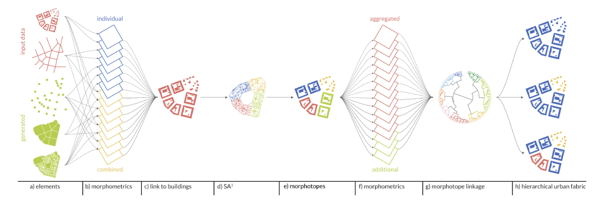

8 The Hierarchical Morphotope Classification
A Theory-Driven Framework for Large-Scale Analysis of Built Form
8.1 Información Básica
| Elemento | Detalle |
|---|---|
| Referencia corta | Fleischmann et al., HiMoC (N/A) |
| Título completo | The Hierarchical Morphotope Classification: A Theory-Driven Framework for Large-Scale Analysis of Built Form |
| Revista / Volumen / DOI | https://arxiv.org/abs/2509.10083 |
| Temática | Clasificación morfométrica jerárquica del tejido construido a gran escala (análisis territorial), mediante regionalización y clustering no supervisado basados en teoría de morfología urbana. |
| Contexto / Problema | Las tipologías/clasificaciones de patrones urbanos existentes suelen: (i) carecer de una base teórica fuerte en morfología urbana, (ii) no escalar más allá de ámbitos locales o nacionales, o (iii) perder detalle para lograr cobertura amplia. El trabajo propone un marco que mantenga fundamento teórico (morphotope de Conzen) y, a la vez, sea computacionalmente escalable y reproducible. |
| Keywords | urban form; classification; urban morphology; taxonomy; spatial data science |
| Pagina Web | https://urbantaxonomy.org/ |
| Repositorio de Código | https://github.com/uscuni/urban_taxonomy |
8.2 Abstract
Original:
Built environment, formed of a plethora of patterns of building, streets, and plots, has a profound impact on how cities are perceived and function. While various methods exist to classify urban patterns, they often lack a strong theoretical foundation, are not scalable beyond a local level, or sacrifice detail for broader application. This paper introduces the Hierarchical Morphotope Classification (HiMoC), a novel, theory-driven, and computationally scalable method of classification of built form. HiMoC operationalises the idea of a morphotope – the smallest locality with a distinctive character – using a bespoke regionalisation method SA3 (Spatial Agglomerative Adaptive Aggregation), to delineate contiguous, morphologically distinct localities. These are further organised into a hierarchical taxonomic tree reflecting their dissimilarity based on morphometric profile derived from buildings and streets retrieved from open data, allowing flexible, interpretable classification of built fabric, that can be applied beyond a scale of a single country. The method is tested on a subset of countries of Central Europe, grouping over 90 million building footprints into over 500,000 morphotopes. The method extends the capabilities of available morphometric analyses, while offering a complementary perspective to existing large scale data products, which are focusing primarily on land use or use conceptual definition of urban fabric types. This theory-grounded, reproducible, unsupervised and scalable method facilitates a nuanced understanding of urban structure, with broad applications in urban planning, environmental analysis, and socio-spatial studies.
Traducción al español:
El entorno construido, conformado por una multiplicidad de patrones de edificios, calles y parcelas, tiene un impacto profundo en cómo se perciben y funcionan las ciudades. Si bien existen diversos métodos para clasificar patrones urbanos, con frecuencia carecen de una base teórica sólida, no escalan más allá del nivel local o sacrifican detalle para lograr aplicaciones más amplias. Este artículo introduce la Clasificación Jerárquica de Morfotopos (HiMoC), un método novedoso, impulsado por teoría y escalable computacionalmente para clasificar la forma construida. HiMoC operacionaliza la idea de “morphotope” —la localidad más pequeña con un carácter distintivo— mediante un método propio de regionalización, SA3 (Spatial Agglomerative Adaptive Aggregation), para delinear localidades contiguas y morfológicamente distintas. Estas se organizan además en un árbol taxonómico jerárquico que refleja su disimilitud, a partir de un perfil morfométrico derivado de edificios y calles obtenidos desde datos abiertos, permitiendo una clasificación flexible e interpretable del tejido construido que puede aplicarse más allá de la escala de un solo país. El método se prueba en un subconjunto de países de Europa Central, agrupando más de 90 millones de huellas de edificios en más de 500.000 morfotopos. El método amplía las capacidades de análisis morfométricos existentes y ofrece una perspectiva complementaria a productos de datos a gran escala que se enfocan principalmente en uso de suelo o en definiciones conceptuales de tipos de tejido urbano. Este método, fundamentado en teoría, reproducible, no supervisado y escalable, facilita una comprensión matizada de la estructura urbana, con aplicaciones amplias en planificación urbana, análisis ambiental y estudios socio-espaciales.
8.3 Preguntas de Investigación / Hipótesis
- ¿Puede una clasificación morfométrica teóricamente fundamentada (morphotope) escalar de forma consistente más allá del nivel nacional usando solo huellas de edificios y red vial? (inferida)
- ¿En qué medida la taxonomía HiMoC se alinea y/o complementa productos existentes (p. ej., CORINE, Urban Atlas, LCZ) al capturar estructura interna del tejido construido? (inferida)
8.4 Metodología
8.4.1 Flujo de trabajo
- Obtención y preprocesamiento de datos: edificios (polígonos) y calles (líneas), limpieza topológica y estandarización de red vial.
- Representación morfológica: generación de enclosed tessellation (tessellación morfológica dentro de barreras) para aproximar características a nivel “parcela”/entorno inmediato.
- Caracterización morfométrica: cálculo de 59 atributos (edificios, calles, intersecciones, celdas de tessellación) en múltiples escalas.
- Delineación de morfotopos: regionalización contigua con SA3 (Ward restringido a un grafo de contigüidad) + extracción tipo “leaf” para obtener clusters contiguos; admite “ruido”.
- Caracterización a nivel morfotope: agregación (medianas) de atributos por morfotope + 3 atributos adicionales definidos a este nivel.
- Vinculación jerárquica: clustering aglomerativo de Ward en espacio de atributos para construir un árbol taxonómico (sin restricción espacial), acelerado con un grafo kNN (10 vecinos) para reducir costos.
- Interpretación: nominación/descrición de ramas hasta 3 niveles de bifurcación, con “pen portraits” basados en perfiles morfométricos.
- Evaluación y comparación: comparación cuantitativa vía co-ocurrencia/intersección espacial contra productos externos (CORINE, Urban Atlas, LCZ) y evaluación cualitativa con estudios de caso y revisión experta.
8.4.2 Modelos / Algoritmos
- SA3 (Spatial Agglomerative Adaptive Aggregation): regionalización basada en Ward con restricción espacial (contigüidad) + extracción denso-basada (“leaf”) para definir morfotopos contiguos y permitir “ruido”.
- Ward Agglomerative Clustering para construir la jerarquía de morfotopos (árbol taxonómico) en espacio de atributos; aceleración mediante kNN (k=10) para limitar cálculos de distancia.
- Intersección espacial + matrices de confusión/co-ocurrencia para comparación con clasificaciones externas (no se reporta “ground truth”).

8.4.3 Datos
El método utiliza dos insumos morfológicos principales: huellas de edificios como polígonos 2D y red vial como líneas (segmentos), complementados por una tessellación morfológica (enclosed tessellation) derivada de ambos. La aplicación empírica cubre seis países contiguos de Europa Central (Austria, Czechia, Germany, Lithuania, Poland, Slovakia) seleccionados por disponibilidad de catastro abierto, diversidad morfológica y conocimiento experto regional. En total, se procesan >90 millones de huellas de edificios y ~21 millones de segmentos viales. El estudio reconoce que este input omite dimensiones como altura de edificios, límites de parcelas y algunos espacios abiertos explícitos, y que la consistencia de los datos condiciona la transferibilidad.
| Tipo | Fuente | Cobertura temporal |
|---|---|---|
| Huellas de edificios (polígonos 2D) | Catastros oficiales abiertos de cada país (INSPIRE) | N/A (no especificada) |
| Red vial (líneas/segmentos) | Overture Maps (Transportation theme; derivado de OpenStreetMap) | N/A (no especificada) |
| Datos de comparación (uso/cobertura de suelo) | CORINE Land Cover | N/A (no especificada en el texto principal) |
| Datos de comparación (urbano) | Copernicus Urban Atlas | N/A (no especificada en el texto principal) |
| Datos de comparación (clima/tejido urbano proxy) | Local Climate Zones (predicción global citada en el paper) | N/A (no especificada) |
8.4.4 Validación & Uncertainties
La validación se plantea como un problema sin “ground truth”: en lugar de exactitud supervisada, el estudio evalúa (i) comparación cuantitativa con productos que capturan conceptos adyacentes (uso/cobertura de suelo, continuidad/densidad urbana, LCZ) mediante intersección espacial y matrices de co-ocurrencia; y (ii) evaluación cualitativa basada en observación visual y conocimiento experto en estudios de caso (diferentes tamaños de asentamiento y regiones). Entre las incertidumbres, se explicita la dependencia de consistencia y disponibilidad de entradas (huellas de edificios y calles) y el potencial desacople conceptual entre la morfología (HiMoC) y clasificaciones externas (en especial LCZ).

| Métrica | Valor | Alcance | Notas |
|---|---|---|---|
| Nº de morfotopos delineados | >500.000 | Europa Central (6 países) | Resultado de SA3 sobre ~90M edificios |
| Tamaño medio de morfotope | 132 edificios | Europa Central (6 países) | Reportado como media |
| Tamaño máximo de morfotope | 636 edificios | Europa Central (6 países) | Morfotope más grande |
| Umbral mínimo para formar morfotope (SA3) | 75 edificios | Parámetro del método | Seleccionado para evitar conexiones espurias |
| Vecinos para acelerar Ward (kNN) | 10 | Construcción del árbol | Reduce requerimientos computacionales; afecta marginalmente la parte alta del árbol |
8.4.5 Replicabilidad & Recursos
| Ítem | Sí/No | Detalle |
|---|---|---|
| Código disponible | Sí | Repositorio público y archivado en Zenodo; incluye especificación de ambiente reproducible. |
| Datos/resultados disponibles | Sí | Producto de datos de la clasificación publicado en Zenodo. |
| Descripción metodológica suficiente | Sí | Método desglosado en 8 pasos + apéndices (atributos, preprocesamiento, etc.). |
| Dependencias/herramientas explícitas | Sí | Se mencionan paquetes y contribuciones (p. ej., spopt, momepy, libpysal, shapely, geopandas). |
8.5 Resultados Clave
- Escala lograda: aplicación en seis países, procesando >90 millones de huellas de edificios y ~21 millones de segmentos viales, con >500.000 morfotopos delineados.
- Granularidad operacional: el árbol taxonómico puede cortarse a distintos niveles (p. ej., ~8 clases para visión general; ~80 o cientos para análisis detallado), manteniendo interpretabilidad mediante descripciones de las ramas superiores.
- Estructura jerárquica interpretable: en el nivel superior se distingue tejido “Coherent” vs “Incoherent”; a niveles siguientes se separan patrones densos/interconectados y patrones de distinta escala (large-scale/small-scale), reflejando diferencias morfológicas en edificios y calles.
- Distribución por país (nivel 3): se reportan diferencias sistemáticas entre países; por ejemplo, Coherent Dense Disjoint Fabric alcanza ~0.56 de los edificios en Alemania y ~0.51 en Eslovaquia, mientras en otros países ronda ~0.13–0.18.
- Comparación con LCZ (contexto de discrepancias): en LCZ, ~47% de edificios se asignan a “Open low-rise” (y ~27% a “Sparsely built”), mientras que en HiMoC las clases más frecuentes a nivel 3 incluyen “Incoherent Small-Scale Compact Fabric” (~42%) y dos clases con ~15% cada una (“Coherent Dense Disjoint Fabric” e “Incoherent Small-Scale Sparse Fabric”), sugiriendo desacoples conceptuales y limitaciones de LCZ para capturar asentamientos pequeños.

8.6 Discusión
- Contribuciones:
- Propone un marco teoría-dirigido (morphotope) pero computacional y escalable para clasificar forma construida más allá del nivel nacional.
- Introduce SA3 para delineación contigua de morfotopos y construye una taxonomía jerárquica flexible e interpretable.
- Argumenta complementariedad con productos a gran escala centrados en uso de suelo o definiciones conceptuales de tipos de tejido.
- Limitaciones:
- Aplicabilidad condicionada por disponibilidad y consistencia de huellas de edificios y red vial; datos alternativos pueden ser heterogéneos o inconsistentes (p. ej., OSM/derivados o footprints de terceros).
- Entrada limitada a 2D (sin altura; sin parcelas explícitas ni open space detallado), lo que puede restringir ciertos tipos de inferencia o desagregación.
- Evaluación sin ground truth; comparaciones externas dependen de marcos conceptuales distintos.
- Futuro:
- Extensión a otros contextos geográficos conforme mejore la disponibilidad/armonización de datos.
- Investigación orientada a extraer conocimiento del árbol (p. ej., relación con límites políticos, propiedades ambientales, y distribución de grupos poblacionales).
8.7 Aplicabilidad en Chile
| Aspecto | Evaluación |
|---|---|
| Disponibilidad de huellas de edificios 2D (cobertura y consistencia) | Condicionante crítica. El método requiere polígonos de edificios relativamente consistentes a gran escala; si la cobertura es parcial o heterogénea, habría que armonizar/normalizar antes de aplicar. |
| Disponibilidad/limpieza de red vial (representación morfológica, no solo transporte) | Requiere preprocesamiento. La red debe simplificarse para reflejar “percepción morfológica” (centrelines, eliminación de artefactos), lo que implica un pipeline de limpieza similar al del paper. |
| Transferencia conceptual de tipos | Alta. La lógica de “morfotopos” y taxonomía jerárquica es agnóstica al país, pero los nombres/pen portraits podrían necesitar adaptación interpretativa al contexto chileno. |
| Evaluación local | Necesaria. Dado que no hay ground truth, se recomienda comparar con productos nacionales (si existen) y validar con expertos locales/estudios de caso (barrios formales, conjuntos de vivienda social, zonas industriales, periurbano). |
| Potencial de uso público | Alto (si hay datos). Permite análisis comparables entre ciudades/territorios y monitoreo de patrones de forma urbana sin depender de categorías de uso de suelo. |
8.8 Madurez & Evidencia
| Eje | Nivel |
|---|---|
| Fundamentación teórica | Alta |
| Escalabilidad demostrada | Alta |
| Reproducibilidad (código/datos) | Alta |
| Validación empírica (contra referencias externas) | Media |
| Generalización a otros países/continentes | Media (depende de datos) |
8.9 Impacto en Políticas Públicas / ODS
Al ofrecer una clasificación interpretable y multi-escala del tejido construido (más allá del uso de suelo), HiMoC puede apoyar diagnósticos y focalización de políticas urbanas: planificación y diseño urbano, evaluación de forma urbana en relación con desempeño ambiental (p. ej., islas de calor, ventilación, exposición), y análisis socio-espacial (segregación, accesibilidad, tipologías residenciales) con un lenguaje común de “tipos morfológicos”. Se alinea especialmente con ODS 11 (Ciudades y comunidades sostenibles) y puede contribuir indirectamente a ODS 13 (Acción por el clima) cuando se usa para evaluar vulnerabilidades y adaptación urbana basadas en estructura física del territorio.